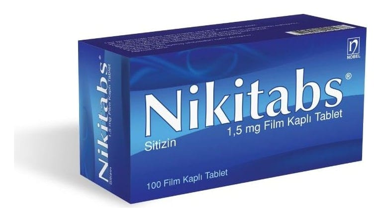

Nikitabs 1,5 mg Film Kaplı Tablet , 100 Adet

Ne için kullanılır
KT · Bölüm 1NİKİTABS, tütün/nikotin bağımlılığında, sigara bırakma sürecini kolaylaştırmak amacıyla kullanılan bir üründür.
NİKİTABS almak, sigarayı bırakmayla ilişkili yoksunluk belirtilerini (depresif ruh hali, sinirlilik, öfke, kaygı, konsantrasyon güçlüğü, iştah artışı, uykusuzluk ve huzursuzluk gibi) hafifleterek nikotin bağımlılığınızı kademeli olarak azaltmanıza yardımcı olur.
NİKİTABS, parlak bordo renkli, bombeli, yuvarlak, bir tarafı Nobel armalı film kaplı tabletlerdir.
Şeffaf PVC-PE-PVDC/Aluminyum blisterlerde, 100 tablet halinde karton kutuda ambalajlanarak sunulmaktadır.